Cutting laundry-room guesswork in multi-unit buildings. Shared laundry rooms run on guesswork no visibility into machine availability, no way to pay except cash, no way to reserve a machine before walking down.
I scoped the product around three problems — availability, payment, reservation — and said no to almost everything else my own brainstorming produced. This case study shows exactly where that discipline held, where it slipped, and what I did about it.
I live in a multi-unit building. Two washers, four dryers, dozens of residents. There's no way to know a machine is free without walking down and checking. There's no way to pay except hoarding quarters. There's no way to know your load is done without standing next to it.
I interviewed residents across the building students, young professionals, families, older residents specifically to avoid designing for people like me. The pattern was immediate and consistent: availability, payment, and visibility were the three things every conversation came back to.
This project didn't move in a straight line, and I think that's the most useful thing about it. v1 was scoped tightly around three research-backed priorities. Usability testing then told me where that scope held and where it didn't. v2 was a direct response to that testing. A later design review a self-audit against my own brief, separate from user testing caught a second layer of smaller issues, leading to v2.1.
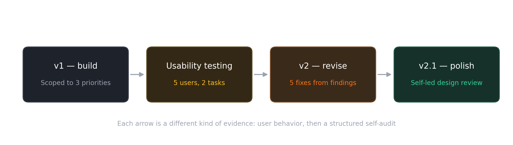
I ran one-on-one interviews rather than a survey, because the core problem was about trust ("will this actually be free when I get there?") as much as function. With a sample this size a handful of residents, not hundreds — I'm treating these as directional signals that shaped priority, not statistically rigorous findings.
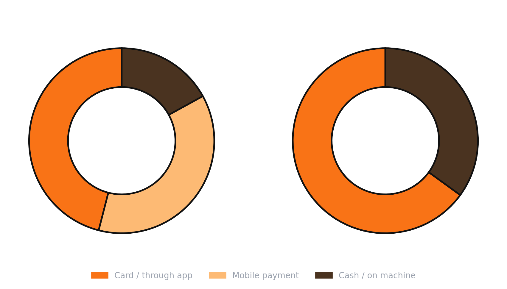
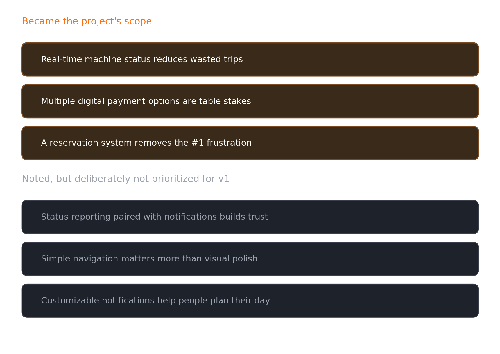
Laundry Cat owns "modern and cashless" but has thin marketing and reported reliability complaints. Coinamatic owns "established and trusted" — 75 years in market, deep property-manager relationships but its product is built around institutional reliability, not resident experience. Neither solved for reservations or real-time visibility the exact gap SwiftWash was built to fill.
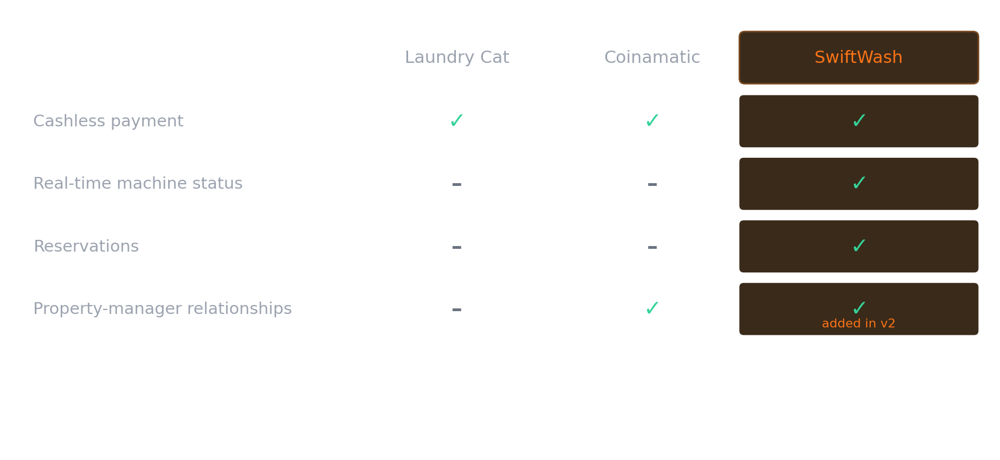
Two personas, deliberately pulling the design in opposite directions: John, a budget-constrained student whose real constraint is cost certainty, and Sarah, a time-constrained professional whose real constraint is not wasting a five-minute window on something unreliable.
Empathy mapping surfaced one shared insight that mattered more than anything specific to either persona: both described checking with other people roommates, group chats, colleagues before trusting a service. That single insight is the entire justification for every community feature that appears later in this document.
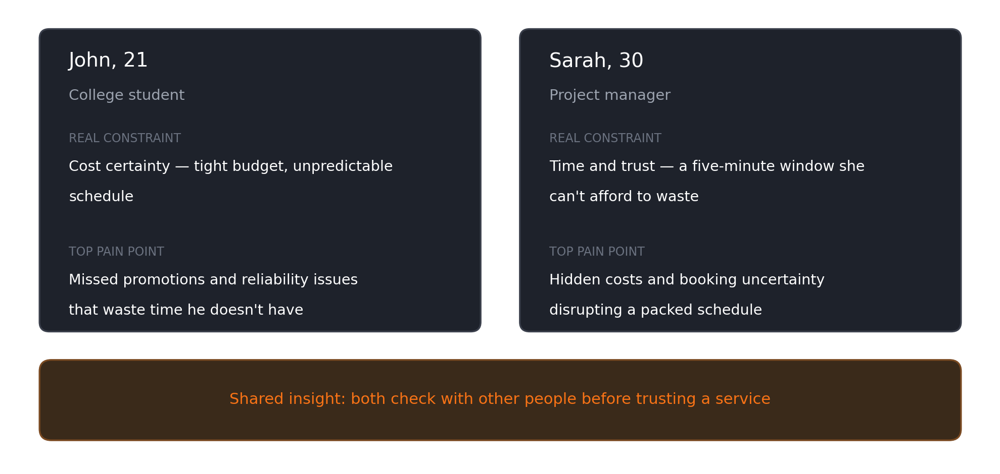
Before any screens, I mapped the highest-frequency task end to end starting a machine and paying for it and held it to seven steps deliberately. Every extra step in a daily-use task is friction multiplied by frequency, so step count was a budget I was actively managing.
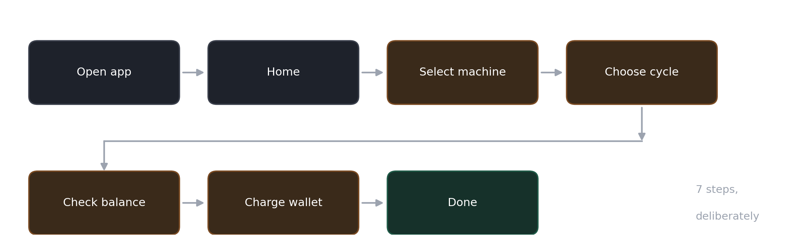
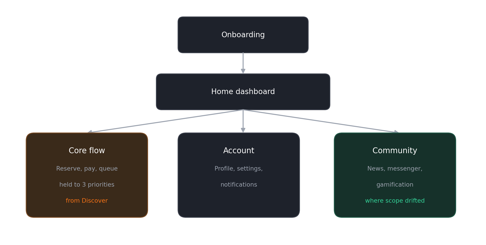
Onboarding. Residents verify against their building's serial number before account creation, then log in with one-time-password and email verification rather than a static password a deliberate trade of sign-in friction for protection against account-sharing on a shared resource.
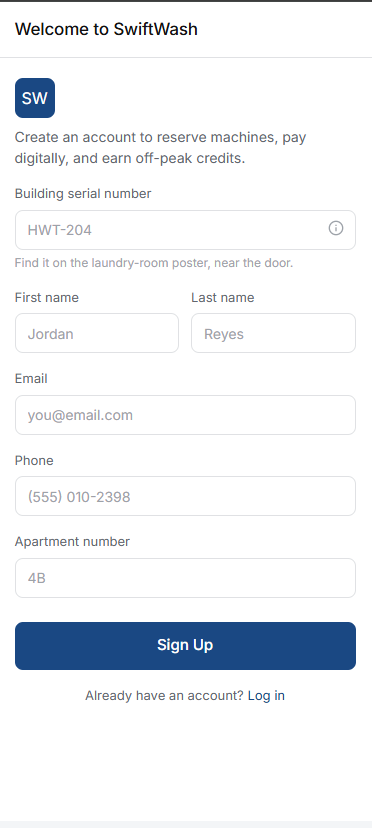
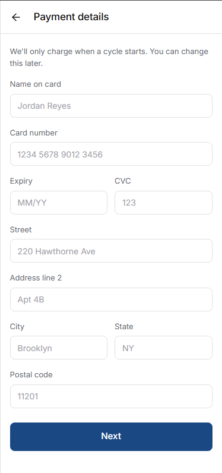
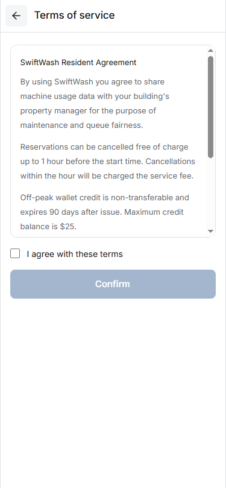
Core flow. The home dashboard answers "is anything free right now?" in one glance — live status per machine, wallet balance, one clear call to action.
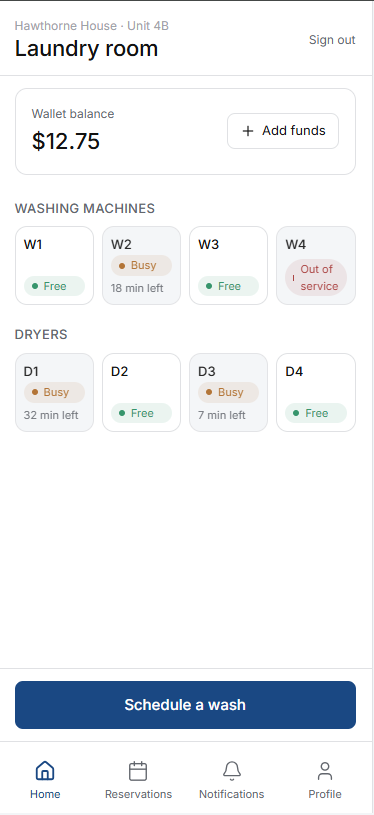
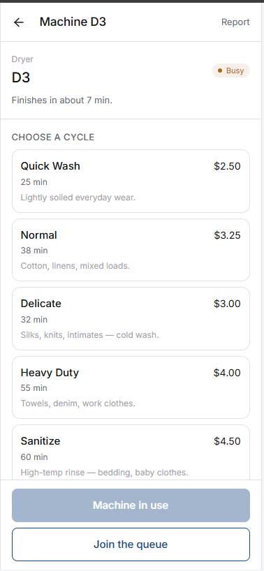
The points-and-game-wagering layer that appears elsewhere in v1 is the one feature here I can't trace back to a piece of research that demanded it more on that in the Revise section.
Five moderated sessions three students, two professionals — matching the makeup of my original interview pool.
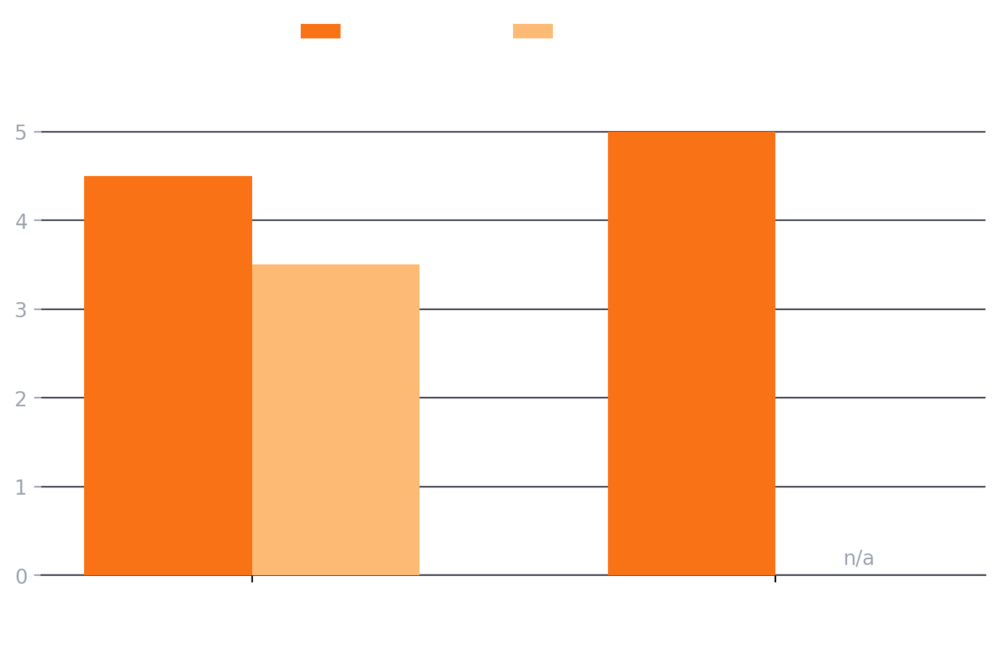
Task 1 — book a machine for later today. 3 of 5 completed with no hesitation. 2 of 5 hesitated specifically at being charged based on reservation time. Ease of use scored 4.5/5; payment clarity scored 3.5/5.
That one-point gap is the most useful single data point this project produced: the flow worked, the cost transparency of reservations didn't.
Task 2 — engage with gamification. Ease of use scored 5/5, but students and professionals wanted different reward logic entirely a sign the feature was designed before its audience was.
What users explicitly asked for: a recurring schedule with reminders instead of a one-off reservation, and the ability to book further than 10 minutes in advance.
Testing produced five direct fixes.
Fix 1 — scheduled, recurring booking replaces the original short hold. Residents pick a day and time window, with an option to repeat weekly, and fairness is enforced through a cap on total active reservations rather than a countdown timer.
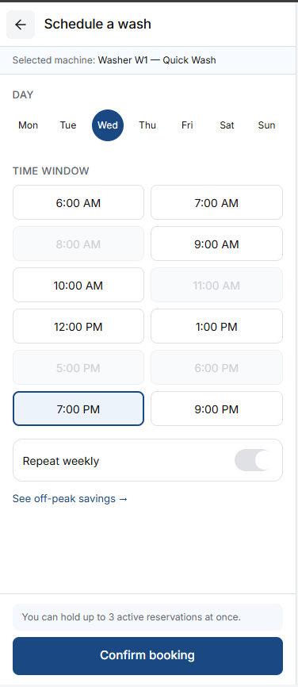
Fix 2 — an itemized payment breakdown replaces the vague reservation charge that caused the 3.5/5 score. Cost, timing, and cancellation terms are now stated plainly before any charge is made.
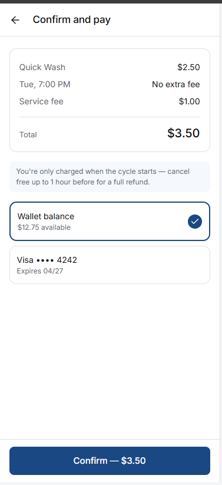
Fix 3 — a waitlist queue handles the case testing didn't originally cover: what happens when every machine is booked.
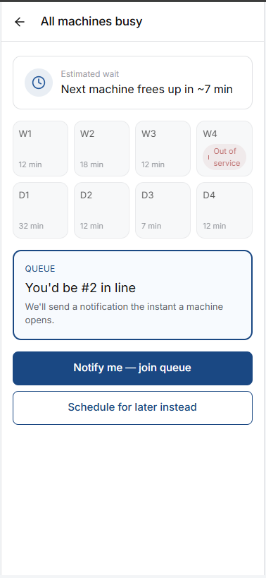
Fix 4 — off-peak rewards is the redesign I'm most willing to talk through in detail, because it's a correction, not a deletion. The original points-and-games layer had no research behind it and tested as motivationally mismatched between personas. The instinct — residents respond to small, tangible rewards wasn't wrong. The target was. The real, evidenced problem is demand clustering: residents pile into the same few peak hours. v2 keeps the reward instinct but re-points it at that actual problem.
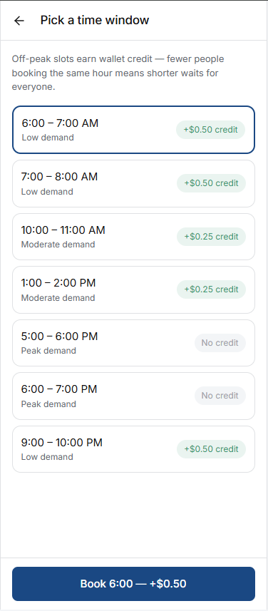
Fix 5 — a property-manager view answers the one competitive gap v1 had no response to. A lightweight dashboard gives building staff utilization data and a maintenance queue fed directly by resident reports.
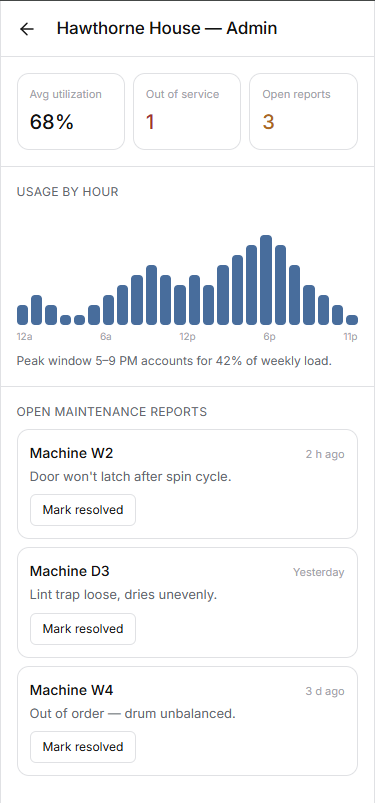
After building v2, I ran a structured design review against my own brief separate from user testing, a self-audit for shipping-readiness. It caught four smaller issues, the kind that get noticed in a senior portfolio review specifically because they're easy to miss.
Scheduling and off-peak rewards had drifted into two competing flows. I merged them into one screen, so demand level, credit, and booking happen in a single coherent path instead of two screens that didn't obviously connect.
The day picker couldn't distinguish "today" from "selected." Fixed with an explicit label, since conflating orientation with selection was the same category of ambiguity that caused the original payment-clarity problem.
Messenger read as a support inbox, not the community feature the empathy map actually justified. Rebuilt as a real building-wide group thread, with official channels clearly tagged so they don't get confused with peer conversation.
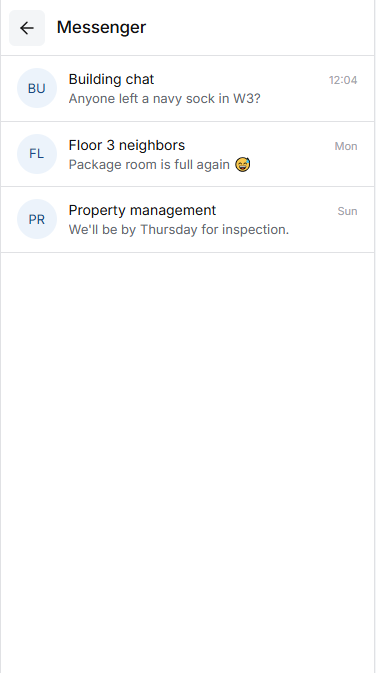
Error, empty, and loading states existed in the brief but not in the build. Added all three, plus the OTP verification screen that had been skipped.
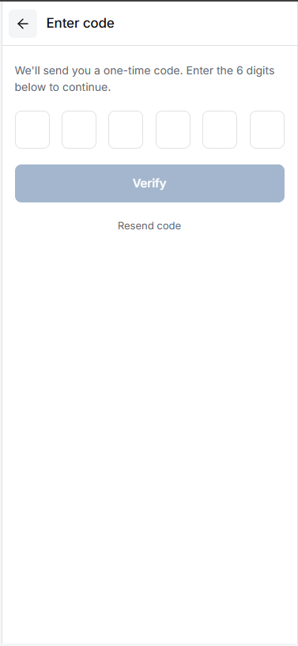
If this shipped, here's what I'd track, and why each metric maps to a specific fix above: reservation-to-completion rate validates the scheduling redesign; payment drop-off rate validates the cost-clarity fix; average queue wait time validates the waitlist; the peak-versus-off-peak booking split validates the rewards redesign; maintenance resolution time validates the property-manager loop.
I'm including this without invented numbers — this didn't ship because knowing what "working" would look like is part of the design, not an afterthought to it.
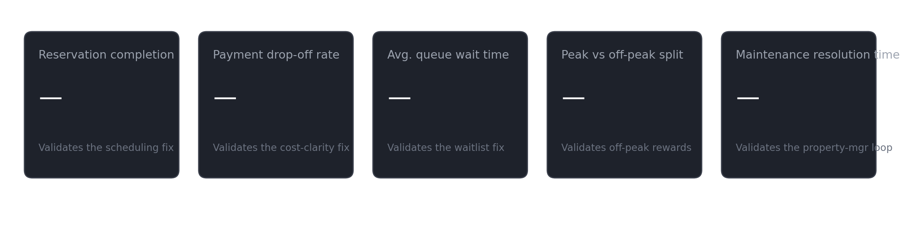
Payment failing mid-reservation releases the hold immediately rather than silently keeping a machine blocked. A machine breaking mid-cycle triggers an automatic refund prompt and a one-tap maintenance report. A queued resident who doesn't respond in time passes their slot to the next person rather than holding the line hostage.
Status indicators are never color-only every status pairs a color with a text label, so the system holds up under color blindness and screen readers. Tap targets on the machine grid are sized for one-handed use, since this is a product people frequently operate while carrying a laundry basket.
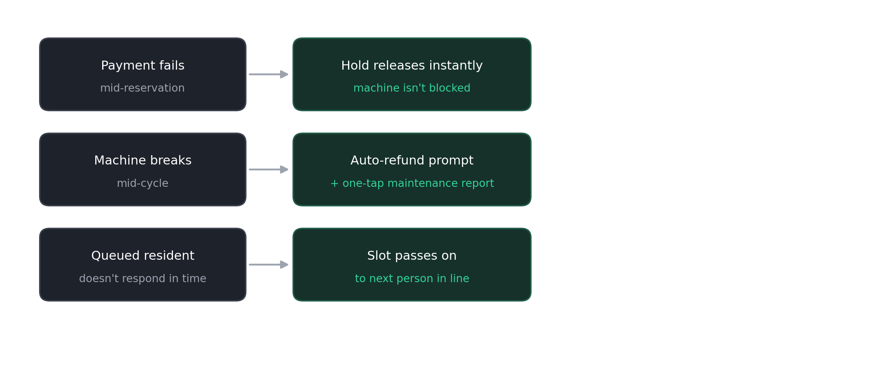
Two fixes, in order: validate that the off-peak credit amounts genuinely shift booking behavior, since that's a pricing experiment and not a design one and pilot the property-manager view with one real building contact before building it further.